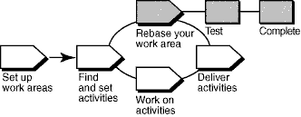

Overview
The following diagram illustrates the UCM workflow. Shaded areas are discussed in this tool mentor.

In the UCM model, activities (work) delivered from multiple sources are integrated and organized into baselines.
Usually, baselines go through a cycle of testing and bug fixing until they reach a satisfactory level of stability. When a
baseline reaches this level, your project manager designates it as a recommended baseline for the stream.
To work with the set of versions in the recommended baseline, rebase your development work area. To minimize the amount
of merging necessary while you deliver activities, rebase your development work area with each new recommended baseline
as it becomes available.
This tool mentor is applicable when running Microsoft Windows.
Tool Steps
A rebase operation involves the following tasks:
-
Prepare your development view
-
Start the rebase operation
-
Merge files
-
Test your development work area
-
Complete the rebase operation
 Refer to the following
ClearCase online Help topics for detailed information on the steps for this procedure: Refer to the following
ClearCase online Help topics for detailed information on the steps for this procedure:
-
Comparing files, directories, and versions
-
Merging files, directories, and versions
-
Check in all work before beginning a rebase operation. ClearCase updates only checked-in files and directories. The
ClearCase Find Checkouts utility finds checked out versions in your view.
-
Navigate to your development work area. In the left pane, right-click the view directory, and click
ClearCase > Find Checkouts.
Refer to the
topic titled Finding checked out elements in ClearCase online Help for detailed instructions on finding and
checking out work.
-
Begin the rebase operation from a view attached to your development stream.
-
The Rebase Stream Preview dialog box displays the project's recommended baselines for rebasing. When the rebase
operation begins, it performs file merges and informs you of file conflicts that must be resolved manually.
Refer to the
topic titled To start a rebase operation in ClearCase online Help for detailed instructions on this
procedure.
-
ClearCase merges the work in your development stream with the work from the integration stream, completing trivial
merges automatically.
-
If non-trivial merge conflicts occur, the rebase operation starts the DiffMerge utility and prompts you to
resolve the conflicts.
Refer to the topic titled
Merging files, directories, and versions in ClearCase online Help for detailed information on the steps in this
procedure.
-
Build and test the source files in your development view to verify that your undelivered activities were built
successfully with the versions in the baseline.
-
After you rebase, build and test the source files in your development view to verify that your undelivered
activities were built successfully with the versions in the baseline.
Completing a rebase operation consists of two tasks: checking in any merge results and changing the state of the
operation to complete.
-
After testing your work, click Complete in the Rebase Status dialog box.
-
ClearCase checks in any versions checked out to your development view and notifies your development stream that the
rebase operation is complete.
-
Click Close to dismiss the dialog box.
 See "Rebasing Your
Work Area" in the ClearCase manual Developing Software for detailed information on each step. See "Rebasing Your
Work Area" in the ClearCase manual Developing Software for detailed information on each step.
|